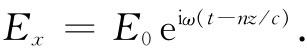

我们现在想要求出：哪种类型的电磁波才能在这样的电介质中存在，其中除了束缚于原子中的电荷外并无其他附加电荷，为此我们取ρ=-▽·P和j=∂P/∂t。这样，麦克斯韦方程组变成
可按照以前做过的那样来求解这些方程式，即从取式（32.19c）的旋度开始：
对于▽·E则利用式（32.19a），因而得
所以我们现在所得到的并非是波动方程，而是达朗贝尔算符作用于E，等于含有极化强度P的两项。
然而，由于P取决于E，所以方程式（32.20）可能仍存在波动解。现在我们将限于各向同性 电介质中，因而P始终与E同向。让我们尝试找出沿z方向行进的波的解，这样电场也许会按 变化。我们也将假定波是在x方向偏振的，即电场只有一个x分量。我们写出
（32.21）
你知道，任一个（z-vt）的函数代表一个以速率v传播的波。式（32.21）的指数可以写成
因而式（32.21）就代表一个具有如下相速的波：
v相 =ω/k.
折射率n是通过令
而被定义的（见第1卷第31章）。这样式（32.21）就变成

因此，我们可以先求出要使式（32.21）满足适当的场方程所需的k值，然后再应用下式求出n：
（32.22）
由于在各向同性的材料中，常常只有极化的一个x分量，于是P不会随x坐标发生变化，所以▽·P=0，这样便消除了式（32.20）右边的第一项。并且，由于我们现在假定电介质是线性的，所以Px 可能按eiωt 变化，而∂2 Px /∂t2 =-ω2 Px 。这样，式（32.20）中的拉普拉斯算符简单地变成∂2 Ex /∂z2 =-k2 Ex ，因而得到
现在让我们暂时假定，由于E按照正弦形式变化，所以可以令P正比于E，犹如式（32.8）那样（以后我们将要回来讨论这一假定）。因而写出
Px =∈0 NαEx .
这样，从式（32.23）中除去Ex ，从而求得
（32.24）
我们已经发现一个像式（32.21）那样的波，其波数k由式（32.24）所给出，该波将满足各个场方程。利用式（32.22），则折射率n将由下式给出：
n2 =1+Nα. （32.25）
让我们把这一个式同在气体折射率的理论（第1卷第31章）中所得到的式子做比较。在那里，我们曾经得到式（31.19），即
由式（32.6）取α，则式（32.25）应给出
首先，这里有一个新项iγω，这是由于我们正把振子的损耗包括进去的缘故。其次，前一个式子左边是n而不是n2 ，所以又有一个附加因数1/2。但要注意，如果N足够小以致n接近于1（如在气体中的情况），则式（32.27）表明n2 等于1加上一个小数目：n2 =1+∈。于是可以写成 ，而且两个表示式也就彼此等价。这样，我们的新方法对于气体给出与以前相同的结果。
现在，你或许认为，式（32.27）也应给出稠密材料的折射率。然而，由于以下几个原因它需要做修正。首先，关于这个式子的推导曾假定作用于每个原子的极化场是场Ex 。然而，这一假定并不 正确，因为在稠密材料中也还有附近其他原子所产生的、与Ex 相差不多的场。当我们过去学习电介质中的静电场时也曾考虑过相似的问题（见第11章）。你会记得，我们当时通过想象将一个单独原子置于周围电介质的一个球形空穴中而估计它所在处的场。在这样一个空穴的场——我们曾称为局部 电场——比起平均场E来要超出P/（3∈0 ）（然而，应该记住，这一结果只有在各向同性材料——包括立方晶体的那种特殊情况——中才是严格正确的）。
相同的论证对于波中的电场也会适用，只要波长比原子间距大得多便行。在这种限制情况下，我们可以写出
（32.28）
这局部电场应该就是用于式（32.3）中的E场，也就是说，式（32.8）应重新写成
P=∈0 NαE局部 . （32.29）
应用式（32.28）的E局部 ，求得
换句话说，在稠密材料中P仍旧正比于E（对正弦变化的场来说）。然而，比例常数却不是∈0 Nα［如在式（32.23）下面的式中我们曾写出的那样］，而应该是∈0 Nα/［1-（Nα/3）］。因此就必须将式（32.25）改正为

如果把这个式写成如下形式，那就更加方便：
（32.32）
在代数上上两式是等价的，这就是大家熟悉的克劳修斯-莫索提方程。
在稠密材料中还有另一种复杂性。由于相邻原子如此靠近，它们之间便有强烈的相互作用。因此，那些内部的振动模式改变了。原子振动的固有频率因这些相互作用而被扩大了，所以它们往往受到很严重的阻尼——阻力系数变得很大。因此，固体中的那些ω0 和γ与在自由原子中的相比就很不相同。虽然有这些限制，但我们仍然至少可以近似地利用式（32.7）来表示α。于是就有
最后一个复杂性。如果稠密材料是几种成分的混合物，则每一种成分都对极化有贡献。总的α就等于这混合物中每种成分贡献之和［除了对有序晶体中局部场近似式（32.28）的不准确性——过去分析铁电体时我们就曾讨论过的效应——外］。把每种成分单位体积的原子数写成Nj ，便可用下式代替式（32.32）：
其中每个αj 将由像式（32.7）那样的表示式给出。于是式（32.34）就完成了我们关于折射率理论的工作。3（n2 -1）/（n2 +2）这个量由频率的某个复变函数给出，而这个函数就是平均原子极化率α（ω）。关于稠密物质中α（ω）的准确计算（即要求出fk ，γk 和ω0k ）是量子力学中的困难问题，只对于几种特别简单的物质才根据第一性原理完成了这种计算。